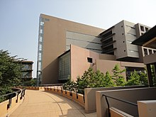

東京外国語大学は、1873 年に建学された東京外国語学校の使命を引き継ぎ、外国の言語とそれを基底とする文化一般を研究・教授し、言語を通して外国に関する理解を深めることを目的として、日本と世界諸地域を結ぶ人材を養成してきました。

世界のリアルな情報に直接触れて考えるには、言語を知ることが重要なのです。
東京外国語大学では、多様な言語と地域、その地域の特性や課題を広くかつ深く扱い、日本と世界を結ぶ人材を育成します。

日本を含む世界諸地域の多様な言語・文化・社会の研究を推進します。

多文化化する日本や社会の諸問題の解決に向け、大学として貢献します。
学部入試情報
大学院入試情報
研究生・科目等履修生の募集
本学をめざす外国人留学生の方へ
資料請求